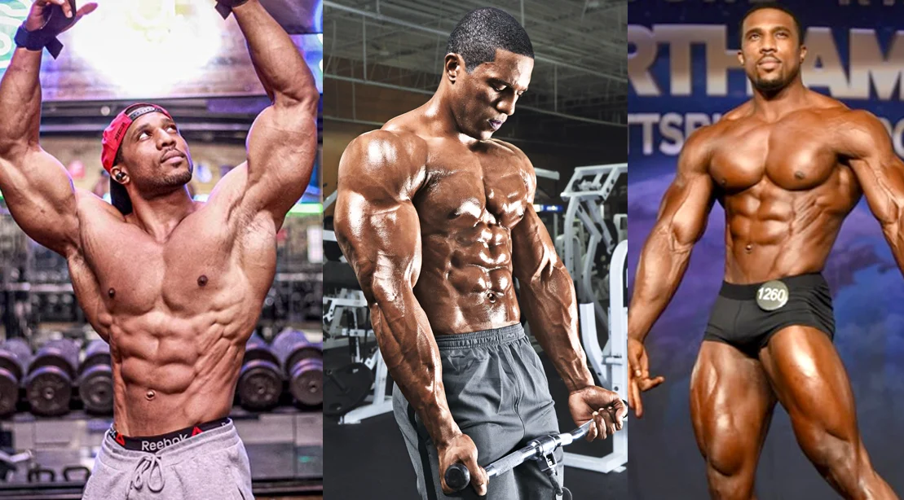

Workout Splits
 Text Color
Workout splits are programs that you follow which guide you on which
muscle group to train for optimal growth and recovery. There are many
types of workout splits that can be used, but the main ones are:
Full-body split
This is the most beginner orientated workout split and is made up as follows:
- Day 1: All muscle groups — 1 exercise per muscle group, 3 sets for each excersise, 10-12 reps per set
- Day 2: Rest day
- Day 3: All muscle groups — 1 exercise per muscle group, 3 sets for each excersise, 10-12 reps per set
- Day 4: Rest day
- Day 5: All muscle groups — 1 exercise per muscle group, 3 sets for each excersise, 10-12 reps per set
- Day 6: Rest day
- Day 7: Rest day
This form of a split allows beginners in the gym to get their bodies to adjust to weightlifting, as well as rest enough so that they don't cause an injury.
Upper and Lower body split
The next step after doing a full-body split is to begin using an upper lower split where you train your full body over two days instead of one. This split looks like this:
- Day 1: Upper-body muscle groups — 2 exercises per upper muscle group, 3 sets for each excersise, 6-8 and 10-12 reps per set depending on the intensity of the set
- Day 2: Lower-body muscle groups — 2 exercises per lower muscle group, 3 sets for each excersise, 6-8 and 10-12 reps per set depending on the intensity of the set
- Day 3: Rest day
- Day 4: Upper-body muscle groups — 2 exercises per upper muscle group, 3 sets for each excersise, 6-8 and 10-12 reps per set depending on the intensity of the set
- Day 5: Lower-body muscle groups — 2 exercises per lower muscle group, 3 sets for each excersise, 6-8 and 10-12 reps per set depending on the intensity of the set
- Day 6: Rest day
- Day 7: Rest day
Push/Pull/Legs split
Push/Pull/Legs split is one of the most commonly used splits in the gym, and my personal favourite. It consists of a 3 day cycle, where you train your Push muscles, your pull muscles and your leg muscles like so:
- Day 1: Chest, shoulders, triceps — 3 exercises for each muscle group; 3 sets per excersise; 6-8, 8-10 and 10-12 reps per set
- Day 2: Back, biceps — 3 exercises for each muscle group; 3 sets per excersise; 6-8, 8-10 and 10-12 reps per set
- Day 3: Legs — 4 exercises; 3 sets per excersise; 6-8, 8-10 and 10-12 reps per set
- Day 4: Chest, shoulders, triceps — 3 exercises for each muscle group; 3 sets per excersise; 6-8, 8-10 and 10-12 reps per set
- Day 5: Back, biceps — 3 exercises for each muscle group; 3 sets per excersise; 6-8, 8-10 and 10-12 reps per set
- Day 6: Legs — 4 exercises; 3 sets per excersise; 6-8, 8-10 and 10-12 reps per set
- Day 7: Rest day
Push/Pull/Legs allows you to train all your muscle groups as well as give them enough time to recover. They are perfect for you if you don't want to spend a long time in the gym but want to go to the gym almost everyday.
Four day split
This training shows you are beginning to take your training more seriously, you train fewer muscle groups per day, which allows you to increase the volume of your workout muscle group.
- Day 1: Back, biceps — 3 exercises per muscle group, 3-4 sets per excersise, 6-15 reps per set
- Day 2: Chest, triceps — 3 exercises per muscle group, 3-4 sets per excersise, 6-15 reps per set
- Day 3: Rest day
- Day 4: Legs — 5 exercises, 3-4 sets per excersise, 6-15 reps per set
- Day 5: Shoulders — 4 exercises, 3-4 sets per excersise, 6-15 reps per set
- Day 6: Rest day
- Day 7: Rest day
Five day split
This is a very advanced split, it allows you to train every muscle group individually, and allows optimal rest time for each muscle group.
- Day 1: Chest — 4-5 exercises, 3-4 sets per excersise, 6-15 reps per set
- Day 2: Back — 5 exercises, 3-4 sets per excersise, 6-15 reps per set
- Day 3: Shoulders, upper traps — 4-5 exercises, 3-4 sets per excersise, 6-15 reps per set
- Day 4: Legs — 5-6 exercises, 3-4 sets per excersise, 6-15 reps per set
- Day 5: Biceps, triceps — 3-4 exercises each, 3-4 sets per excersise, 6-15 reps per set
- Day 6: Rest day
- Day 7: Rest day
Finally, to work out how much weight is being used when 20kg weights are loaded onto a bar, use this formula: